This page contains recipes for the Heatmap category.
Visit the Cookbook Home Page to view all cookbook recipes.
Visit the Cookbook Home Page to view all cookbook recipes.
Heatmap Quickstart
Heatmaps display a 2D array using a colormap.
var plt = new ScottPlot.Plot(600, 400);
double[,] data2D = { { 1, 2, 3 },
{ 4, 5, 6 } };
plt.AddHeatmap(data2D);
plt.SaveFig("heatmap_quickstart.png");
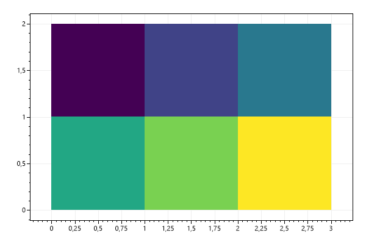
Flipped Heatmap
Heatmaps can be flipped vertically and/or horizontally.
var plt = new ScottPlot.Plot(600, 400);
double[,] data = ScottPlot.DataGen.SampleImageData();
var hm1 = plt.AddHeatmap(data, lockScales: false);
hm1.XMin = 0;
var hm2 = plt.AddHeatmap(data, lockScales: false);
hm2.XMin = 100;
hm2.FlipHorizontally = true;
var hm3 = plt.AddHeatmap(data, lockScales: false);
hm3.XMin = 200;
hm3.FlipVertically = true;
var hm4 = plt.AddHeatmap(data, lockScales: false);
hm4.XMin = 300;
hm4.FlipVertically = true;
hm4.FlipHorizontally = true;
plt.SaveFig("heatmap_flip.png");
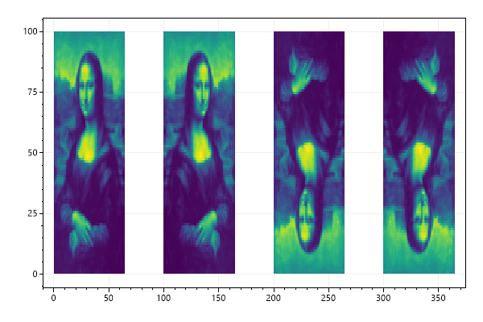
Heatmap with Tight Margins
The heatmap can fit the plot area exactly if margins are set to zero and the square axis lock is disabled.
var plt = new ScottPlot.Plot(600, 400);
double[,] data2D = { { 1, 2, 3 },
{ 4, 5, 6 } };
plt.AddHeatmap(data2D, lockScales: false);
plt.Margins(0, 0);
plt.SaveFig("heatmap_margins.png");
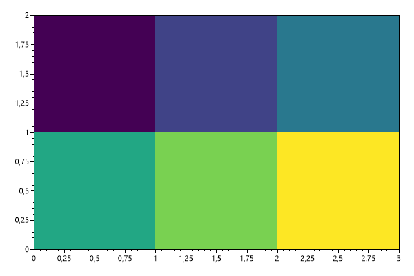
Heatmap with Colorbar
Colorbars are often added when heatmaps are used.
var plt = new ScottPlot.Plot(600, 400);
double[,] data2D = { { 1, 2, 3 },
{ 4, 5, 6 } };
var hm = plt.AddHeatmap(data2D, lockScales: false);
var cb = plt.AddColorbar(hm);
plt.Margins(0, 0);
plt.SaveFig("heatmap_colorbar.png");
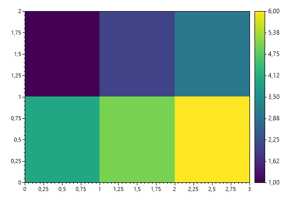
Smooth Heatmap
Heatmaps display values as rectangles with sharp borders by default. Enabling the Smooth feature uses bicubic interpolation to display the heatmap as a smooth gradient between values.
var plt = new ScottPlot.Plot(600, 400);
var rand = new Random(0);
double[,] data2D = DataGen.Random2D(rand, 5, 4);
var hm = plt.AddHeatmap(data2D, lockScales: false);
hm.Smooth = true;
plt.SaveFig("heatmap_smooth.png");
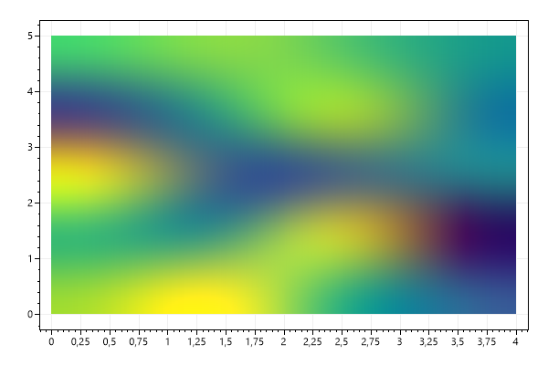
Heatmap Image
Image data can be plotted using the heatmap plot type.
var plt = new ScottPlot.Plot(600, 400);
double[,] imageData = DataGen.SampleImageData();
plt.AddHeatmap(imageData);
plt.SaveFig("heatmap_image.png");
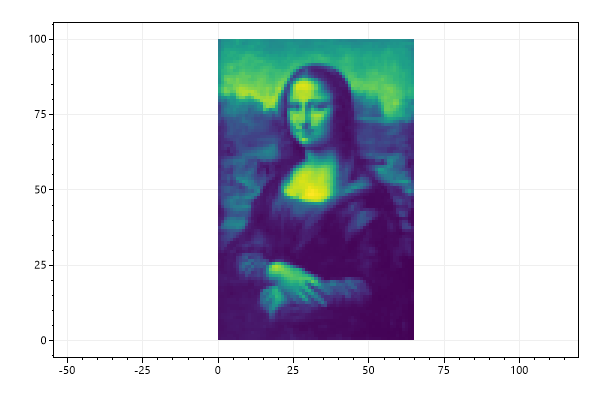
Heatmap Opacity
Heatmaps have an Opacity property that can be set anywhere from 0 (transparent) to 1 (opaque).
var plt = new ScottPlot.Plot(600, 400);
double[,] imageData = DataGen.SampleImageData();
var hm = plt.AddHeatmap(imageData);
hm.Opacity = 0.5;
plt.SaveFig("heatmap_opacity.png");
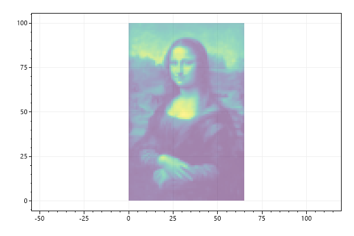
Single Color Heatmap
A single-color heatmap can be created where cell transparency is defined by a 2D array containing values 0 to 1.
var plt = new ScottPlot.Plot(600, 400);
double?[,] data = DataGen.SampleImageDataNullable();
var hm1 = plt.AddHeatmap(Color.Red, data, lockScales: false);
hm1.OffsetX = 0;
hm1.OffsetY = 0;
var hm2 = plt.AddHeatmap(Color.Green, data, lockScales: false);
hm2.OffsetX = 30;
hm2.OffsetY = 20;
var hm3 = plt.AddHeatmap(Color.Blue, data, lockScales: false);
hm3.OffsetX = 60;
hm3.OffsetY = 40;
plt.SaveFig("heatmap_single_color.png");
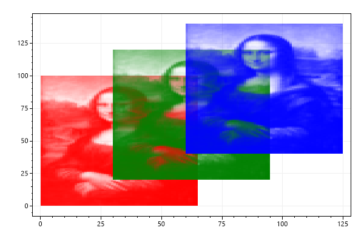
2D Waveform
This example demonstrates a heatmap with 1000 tiles
var plt = new ScottPlot.Plot(600, 400);
int width = 100;
int height = 100;
double[,] intensities = new double[width, height];
for (int x = 0; x < width; x++)
for (int y = 0; y < height; y++)
intensities[x, y] = (Math.Sin(x * .2) + Math.Cos(y * .2)) * 100;
var hm = plt.AddHeatmap(intensities);
var cb = plt.AddColorbar(hm);
plt.SaveFig("heatmap_2dWaveform.png");
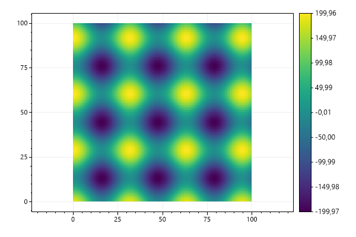
Colormap
Viridis is the default colormap, but several alternatives are available.
var plt = new ScottPlot.Plot(600, 400);
double[,] intensities = new double[100, 100];
for (int x = 0; x < 100; x++)
for (int y = 0; y < 100; y++)
intensities[x, y] = (Math.Sin(x * .2) + Math.Cos(y * .2)) * 100;
var hm = plt.AddHeatmap(intensities, Drawing.Colormap.Turbo);
var cb = plt.AddColorbar(hm);
plt.SaveFig("heatmap_colormap.png");
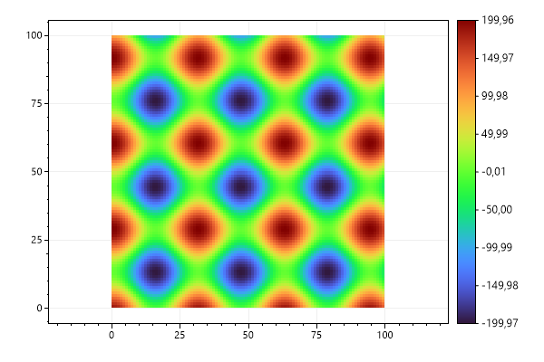
Styled Colormap
Viridis is the default colormap, but several alternatives are available.
var plt = new ScottPlot.Plot(600, 400);
double[,] intensities = new double[100, 100];
for (int x = 0; x < 100; x++)
for (int y = 0; y < 100; y++)
intensities[x, y] = (Math.Sin(x * .2) + Math.Cos(y * .2)) * 100;
var hm = plt.AddHeatmap(intensities, Drawing.Colormap.Turbo);
var cb = plt.AddColorbar(hm);
plt.Style(Style.Black);
plt.SaveFig("styled_heatmap_colormap.png");
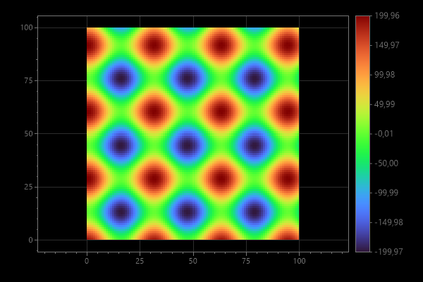
Palette Colormap
Heatmap data can be presented using a colormap defined by a fixed set of colors.
var plt = new ScottPlot.Plot(600, 400);
double[,] data = DataGen.SampleImageData();
// create a colormap from a defined set of colors
Color[] colors = { Color.Indigo, Color.Blue, Color.Green, Color.Yellow, Color.Orange, Color.Red, };
// display the colormap on the plot as a colorbar
ScottPlot.Drawing.Colormap cmap = new(colors);
var cbar = plt.AddColorbar(cmap);
cbar.MaxValue = 255;
// use custom tick positions
double[] tickPositions = Enumerable.Range(0, colors.Length + 1)
.Select(x => (double)x / colors.Length)
.ToArray();
string[] tickLabels = tickPositions.Select(x => $"{x * 255:N2}").ToArray();
cbar.SetTicks(tickPositions, tickLabels);
// add a heatmap using the custom colormap
plt.AddHeatmap(data, cmap);
plt.SaveFig("heatmap_palette.png");
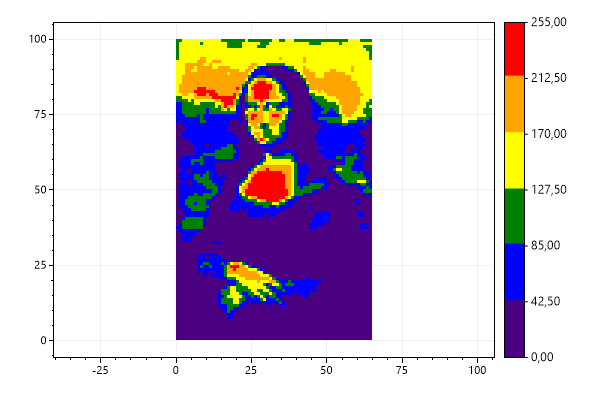
Scale Limits
Heatmap colormap scale can use a defined min/max value.
var plt = new ScottPlot.Plot(600, 400);
double[,] intensities = new double[100, 100];
for (int x = 0; x < 100; x++)
for (int y = 0; y < 100; y++)
intensities[x, y] = (Math.Sin(x * .2) + Math.Cos(y * .2)) * 100;
// scale the colors between 0 and 200
var hm = plt.AddHeatmap(intensities);
hm.Update(intensities, min: 0, max: 200);
// add a colorbar with custom ticks
var cb = plt.AddColorbar(hm);
double[] tickPositions = ScottPlot.DataGen.Range(0, 200, 25, true);
string[] tickLabels = tickPositions.Select(x => x.ToString()).ToArray();
cb.SetTicks(tickPositions, tickLabels, min: 0, max: 200);
plt.SaveFig("heatmap_limitScale.png");
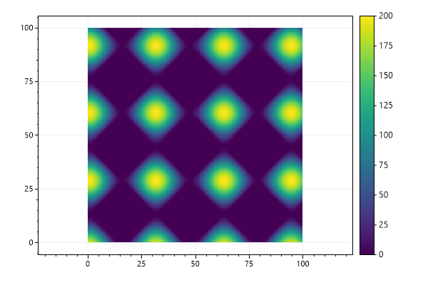
Color Clipping
The value range displayed by the colormap can restricted to a narrow subset of the full data range. Tick labels at the edges of the colorbar can be made to show inequality symbols to indicate the range of data is being clipped when translating values to colors.
var plt = new ScottPlot.Plot(600, 400);
double[,] imageData = DataGen.SampleImageData();
var heatmap = plt.AddHeatmap(imageData);
heatmap.Update(imageData, min: 75, max: 125);
var cb = plt.AddColorbar(heatmap);
// configure the colorbar to display inequality operators at the edges
cb.MaxIsClipped = true;
cb.MinIsClipped = true;
plt.SaveFig("heatmap_clip.png");
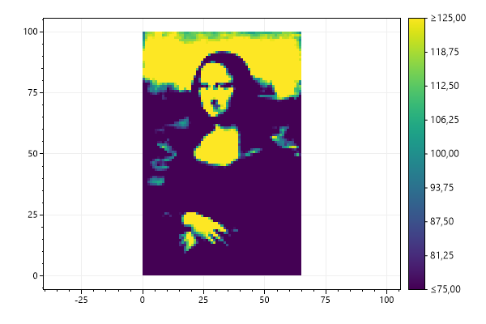
Interpolation by Density
Heatmaps can be created from random 2D data points using the count within a square of fixed size.
var plt = new ScottPlot.Plot(600, 400);
Random rand = new Random(0);
int[] xs = DataGen.RandomNormal(rand, 10000, 25, 10).Select(x => (int)x).ToArray();
int[] ys = DataGen.RandomNormal(rand, 10000, 25, 10).Select(y => (int)y).ToArray();
double[,] intensities = Tools.XYToIntensities(mode: IntensityMode.Density,
xs: xs, ys: ys, width: 50, height: 50, sampleWidth: 4);
var hm = plt.AddHeatmap(intensities);
var cb = plt.AddColorbar(hm);
plt.SaveFig("heatmap_density.png");
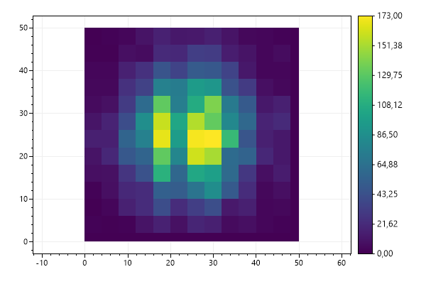
Gaussian Interpolation
Heatmaps can be created from 2D data points using bilinear interpolation with Gaussian weighting. This option results in a heatmap with a standard deviation of 4.
var plt = new ScottPlot.Plot(600, 400);
Random rand = new Random(0);
int[] xs = DataGen.RandomNormal(rand, 10000, 25, 10).Select(x => (int)x).ToArray();
int[] ys = DataGen.RandomNormal(rand, 10000, 25, 10).Select(y => (int)y).ToArray();
double[,] intensities = Tools.XYToIntensities(mode: IntensityMode.Gaussian,
xs: xs, ys: ys, width: 50, height: 50, sampleWidth: 4);
var hm = plt.AddHeatmap(intensities);
var cb = plt.AddColorbar(hm);
plt.SaveFig("heatmap_gaussian.png");
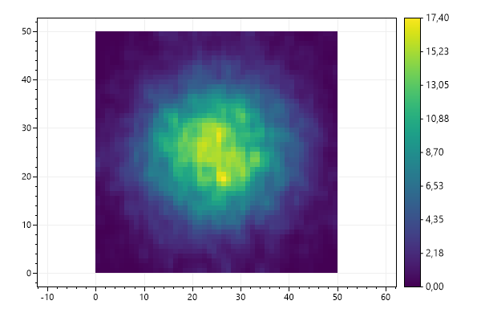
Custom Dimensions
By default heatmaps start at the origin and each rectangle (cell) is 1 unit in size, but heatmap offset and cell size can be customized.
var plt = new ScottPlot.Plot(600, 400);
double[,] data2D = { { 1, 2, 3 },
{ 4, 5, 6 } };
var hm = plt.AddHeatmap(data2D, lockScales: false);
hm.OffsetX = 10;
hm.OffsetY = 20;
hm.CellWidth = 5;
hm.CellHeight = 10;
plt.SaveFig("heatmap_dimensions.png");
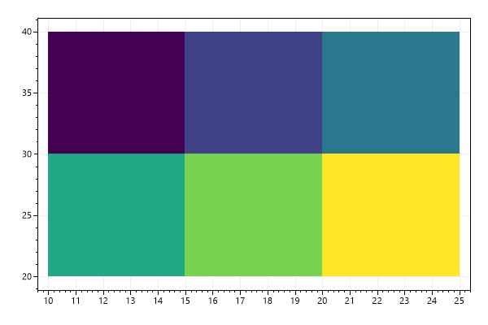
Heatmap with Empty Squares
You can use a 2D array of nullable doubles to indicate some squares do not contain data. This allows the user to display heatmaps with transparency and implement non-rectangular heatmaps.
var plt = new ScottPlot.Plot(600, 400);
double?[,] intensities = {
{ 1, 7, 4, null },
{ 9, null, 2, 4 },
{ 1, 4, null, 8 },
{ null, 2, 4, null }
};
var hmc = plt.AddHeatmap(intensities);
var cb = plt.AddColorbar(hmc);
plt.SaveFig("heatmap_transparent.png");
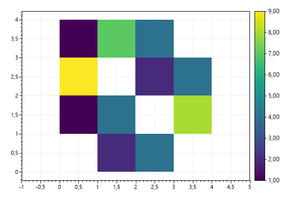
Size and Placement
Edges of the heatmap can be defined as an alternative to defining offset and cell size,
var plt = new ScottPlot.Plot(600, 400);
double[,] imageData = DataGen.SampleImageData();
var hm = plt.AddHeatmap(imageData, lockScales: false);
hm.XMin = -100;
hm.XMax = 100;
hm.YMin = -10;
hm.YMax = 10;
plt.SaveFig("heatmap_placement.png");
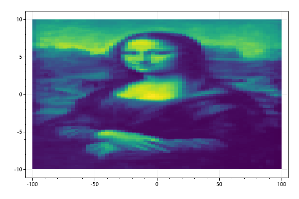
Heatmap Clipping
Heatmaps can be clipped to an arbitrary polygon
var plt = new ScottPlot.Plot(600, 400);
double[,] imageData = DataGen.SampleImageData();
var hm = plt.AddHeatmap(imageData, lockScales: false);
hm.ClippingPoints = new Coordinate[]
{
new Coordinate(30, 15),
new Coordinate(55, 40),
new Coordinate(60, 45),
new Coordinate(80, 60),
new Coordinate(40, 95),
new Coordinate(15, 90),
new Coordinate(5, 50),
};
plt.SaveFig("heatmap_clipping.png");
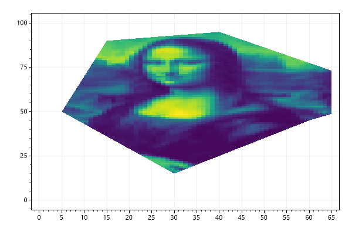